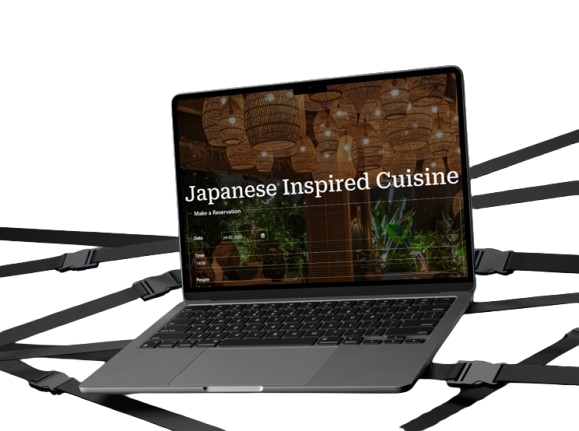
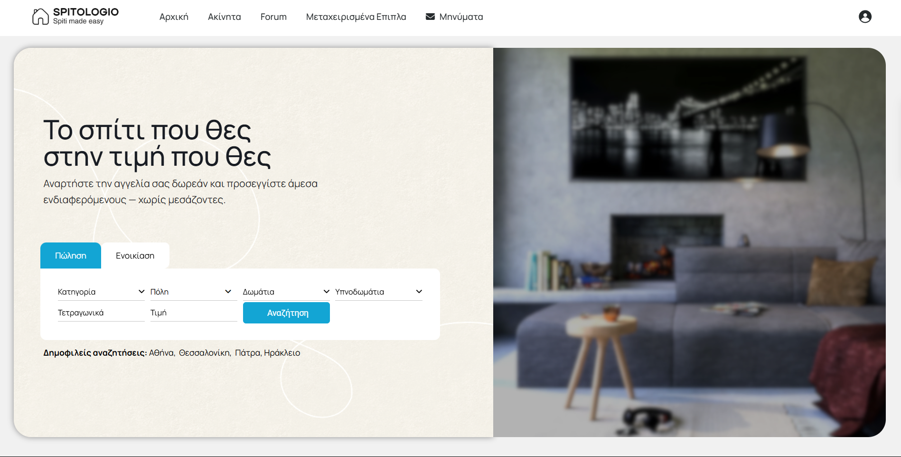

Work

Δημιούργησα ένα σύγχρονο website για εστιατόριο βασισμένο στο θέμα
Astra, όπου οι χρήστες μπορούν να περιηγηθούν, να δουν εικόνες και
πληροφορίες σχετικά με το εστιατόριο, να επικοινωνήσουν, να κλείσουν
τραπέζι και να παραγγείλουν online το πιάτο που επιθυμούν. Το
σύστημα online παραγγελίας είναι custom, επιτρέποντας επιλογή
πιάτων, διαχείριση καλαθιού και αποστολή παραγγελίας στο backend. Η
εμπειρία χρήστη είναι σχεδιασμένη για γρήγορη, απλή και άνετη χρήση,
ιδανική για κινητές συσκευές.

Το Spitologio είναι μια real estate πλατφόρμα που
απευθύνεται αποκλειστικά σε ιδιώτες — χωρίς μεσίτες. Οι χρήστες
μπορούν να ανεβάζουν αγγελίες για ενοικίαση ή πώληση ακινήτων, με
έμφαση σε οικονομικές επιλογές για φοιτητές και νέους. Η πλατφόρμα
βασίζεται στο WordPress και έχουν προστεθεί custom λειτουργίες όπως
επιλογή τύπου αγγελίας, γεωγραφικός εντοπισμός με συντεταγμένες,
σύστημα φίλτρων και forum αγοραπωλησίας μεταχειρισμένων επίπλων. Το
design είναι καθαρό και mobile-first, με έμφαση στην ευκολία
πλοήγησης. Περισσότερα θα βρείτε εδω: spitologio.com
About

Είμαι ο Γιώργος, απόφοιτος Πληροφορικής με πάθος για το web
development και τη δημιουργία λειτουργικών, καλοσχεδιασμένων
ιστοσελίδων. Έχω αποκτήσει εμπειρία τόσο μέσα από την πρακτική μου
άσκηση όσο και μέσα από προσωπικά projects, με στόχο τη συνεχή
εξέλιξη και εφαρμογή των γνώσεών μου στην πράξη.
Πρόσφατα ολοκλήρωσα την πρακτική μου άσκηση, όπου ασχολήθηκα με την
ανάπτυξη ιστοσελίδων και ηλεκτρονικών καταστημάτων (eshop)
βασισμένων σε WordPress. Μέσα από αυτή την εμπειρία απέκτησα
πρακτικές γνώσεις στην κατασκευή και διαχείριση ιστοτόπων, καθώς και
στη βελτιστοποίηση της απόδοσής τους. Αυτή την περίοδο αναζητώ
ευκαιρίες σε αντίστοιχους τομείς, όπου μπορώ να αξιοποιήσω και να
εμπλουτίσω τις δεξιότητές μου στον χώρο της ανάπτυξης
ιστοσελίδων.
Παράλληλα, παρακολουθώ σεμινάρια, webinars και ομιλίες γύρω από το
web development, το UX design και τις σύγχρονες τεχνολογίες, με
σκοπό να παραμένω πάντα ενημερωμένος και ενεργός στον τομέα μου.
Στον ελεύθερο χρόνο μου δημιουργώ προσωπικά projects, είτε για να
δοκιμάσω νέες ιδέες είτε για να βελτιώσω τις γνώσεις μου στην πράξη.
Στόχος μου είναι να φτιάχνω πρακτικές και εύχρηστες ιστοσελίδες και
eshop, δίνοντας πάντα προτεραιότητα στην εμπειρία του χρήστη.
Contact